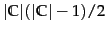
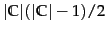
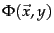
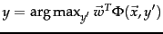
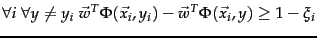

SVMs are inherently two-class classifiers. The traditional way to do multiclass classification with SVMs is to use one of the methods discussed in Section 14.5 (page 14.5 ). In particular, the most common technique in practice has been to build  one-versus-rest classifiers (commonly referred to as ``one-versus-all'' or OVA classification), and to choose the class which classifies the test datum with greatest margin. Another strategy is to build a set of one-versus-one classifiers, and to choose the class that is selected by the most classifiers. While this involves building
 classifiers, the time for training classifiers may actually decrease, since the training data set for each classifier is much smaller.
one-versus-rest classifiers (commonly referred to as ``one-versus-all'' or OVA classification), and to choose the class which classifies the test datum with greatest margin. Another strategy is to build a set of one-versus-one classifiers, and to choose the class that is selected by the most classifiers. While this involves building
 classifiers, the time for training classifiers may actually decrease, since the training data set for each classifier is much smaller.
However, these are not very elegant approaches to solving multiclass problems. A better alternative is provided by the construction of multiclass SVMs, where we build a two-class classifier over a feature vector  derived from the pair consisting of the input features and the class of the datum. At test time, the classifier chooses the class . The margin during training is the gap between this value for the correct class and for the nearest other class, and so the quadratic program formulation will require that . This general method can be extended to give a multiclass formulation of various kinds of linear classifiers. It is also a simple instance of a generalization of classification where the classes are not just a set of independent, categorical labels, but may be arbitrary structured objects with relationships defined between them. In the SVM world, such work comes under the label of structural SVMs . We mention them again in Section 15.4.2 .